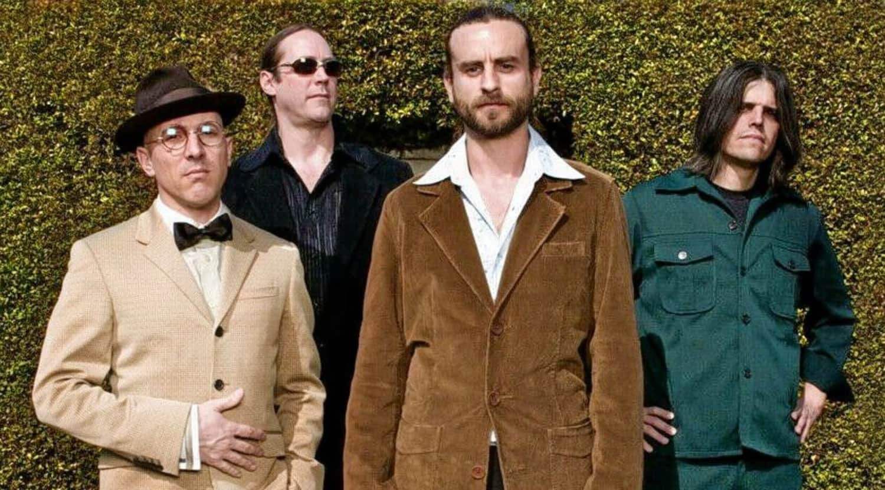

Tool is an American rock band from Los Angeles. Formed in 1990 in Los Angeles, Tool is a rock band known for its complex and layered song structures, unique album art, intense live shows and song lyrics that can be obscure, profoundly spiritual and bitingly sardonic. The band's style and sound are utterly its own, sitting on the border between rock and metal. Tool has, at varying times, been said to play alternative rock, progressive metal, art rock, psychedelic rock and post-metal but, in truth, has shown an impressive ability to defy all precise genre classifications, experimenting heavily from album to album and song to song.
The group's line-up includes drummer Danny Carey, guitarist Adam Jones, and vocalist Maynard James Keenan. Justin Chancellor has been the band's bassist since 1995, replacing their original bassist Paul D'Amour. Tool has won four Grammy Awards, performed worldwide tours, and produced albums topping the charts in several countries.
To date, the band has released five studio albums, one EP and one box set. They emerged with a heavy metal sound on their first studio album, Undertow (1993), and became a dominant act in the alternative metal movement with the release of their follow-up album Ænima in 1996. Their efforts to unify musical experimentation, visual arts, and a message of personal evolution continued with Lateralus (2001) and 10,000 Days (2006), gaining critical acclaim and international commercial success. Their fifth studio album, Fear Inoculum, their first in thirteen years, was released on August 30, 2019 to widespread critical acclaim. Prior to its release, the band had sold over 13 million albums in the US alone.